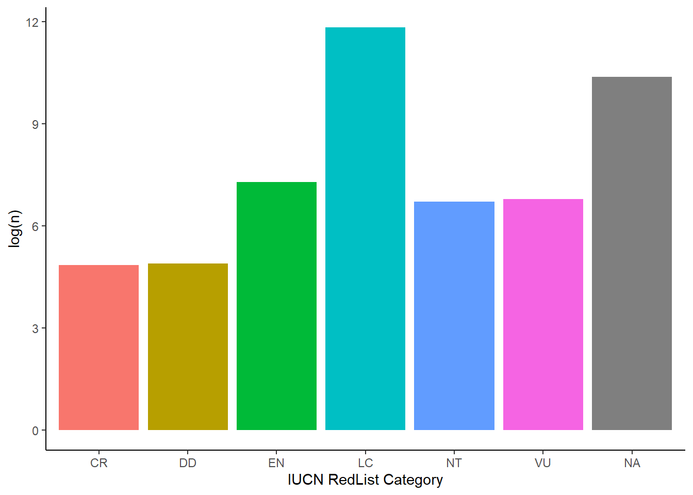
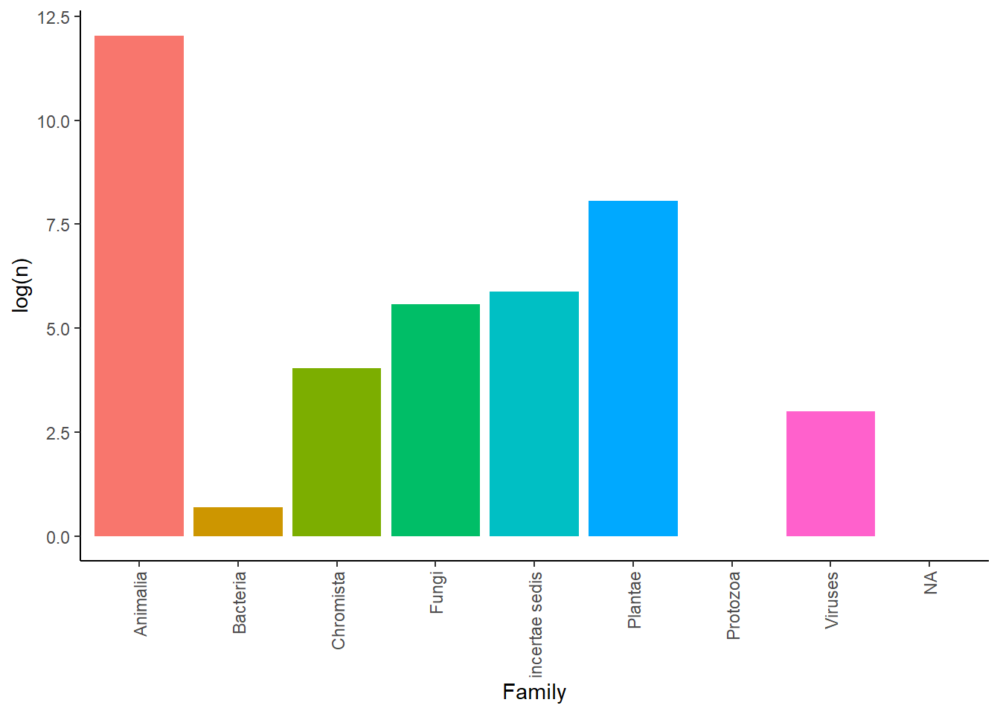

Potential sources of data for each goal and associated indicator are listed. For many of the indicators there may be difficulty in mapping the available data (or data is not available).
| goalN | description | Can we map it at the right scale? | Possible datasets | Scale? |
|---|---|---|---|---|
| 1 | By 2030, eradicate extreme poverty for all people everywhere, currently measured as people living on less than $1.25 a day | Yes | National Population and Housing Census 2014 | District level |
| 1 | By 2030, reduce at least by half the proportion of men, women and children of all ages living in poverty in all its dimensions according to national definitions | Probably not | NA | NA |
| 1 | Implement nationally appropriate social protection systems and measures for all, including floors, and by 2030 achieve substantial coverage of the poor and the vulnerable | Probably not | NA | NA |
| 1 | By 2030, ensure that all men and women, in particular the poor and the vulnerable, have equal rights to economic resources, as well as access to basic services, ownership and control over land and other forms of property, inheritance, natural resources, appropriate new technology and financial services, including microfinance | Probably not | NA | NA |
| 1 | By 2030, build the resilience of the poor and those in vulnerable situations and reduce their exposure and vulnerability to climate-related extreme events and other economic, social and environmental shocks and disasters | Probably not | NA | NA |
| 1 | Ensure significant mobilization of resources from a variety of sources, including through enhanced development cooperation, in order to provide adequate and predictable means for developing countries, in particular least developed countries, to implement programmes and policies to end poverty in all its dimensions | Probably not | NA | NA |
| 1 | Create sound policy frameworks at the national, regional and international levels, based on pro-poor and gender-sensitive development strategies, to support accelerated investment in poverty eradication actions | Probably not | NA | NA |
| 2 | By 2030, end hunger and ensure access by all people, in particular the poor and people in vulnerable situations, including infants, to safe, nutritious and sufficient food all year round | Yes | National Population and Housing Census 2014 | District level |
| 2 | By 2030, end all forms of malnutrition, including achieving, by 2025, the internationally agreed targets on stunting and wasting in children under 5 years of age, and address the nutritional needs of adolescent girls, pregnant and lactating women and older persons | Yes | National Population and Housing Census 2014 | District level |
| 2 | By 2030, double the agricultural productivity and incomes of small-scale food producers, in particular women, indigenous peoples, family farmers, pastoralists and fishers, including through secure and equal access to land, other productive resources and inputs, knowledge, financial services, markets and opportunities for value addition and non-farm employment | Yes | Farming systems map (https://www.yieldgap.org/uganda) | Regional level |
| 2 | By 2030, ensure sustainable food production systems and implement resilient agricultural practices that increase productivity and production, that help maintain ecosystems, that strengthen capacity for adaptation to climate change, extreme weather, drought, flooding and other disasters and that progressively improve land and soil quality | Yes | Farming systems map (https://www.yieldgap.org/uganda) | Regional level |
| 2 | By 2020, maintain the genetic diversity of seeds, cultivated plants and farmed and domesticated animals and their related wild species, including through soundly managed and diversified seed and plant banks at the national, regional and international levels, and promote access to and fair and equitable sharing of benefits arising from the utilization of genetic resources and associated traditional knowledge, as internationally agreed | Probably not | NA | NA |
| 2 | Increase investment, including through enhanced international cooperation, in rural infrastructure, agricultural research and extension services, technology development and plant and livestock gene banks in order to enhance agricultural productive capacity in developing countries, in particular least developed countries | Probably not | NA | NA |
| 2 | Correct and prevent trade restrictions and distortions in world agricultural markets, including through the parallel elimination of all forms of agricultural export subsidies and all export measures with equivalent effect, in accordance with the mandate of the Doha Development Round | Probably not | NA | NA |
| 2 | Adopt measures to ensure the proper functioning of food commodity markets and their derivatives and facilitate timely access to market information, including on food reserves, in order to help limit extreme food price volatility | Probably not | NA | NA |
| 3 | By 2030, reduce the global maternal mortality ratio to less than 70 per 100,000 live births | Yes | National Population and Housing Census 2014 | District level |
| 3 | By 2030, end preventable deaths of newborns and children under 5 years of age, with all countries aiming to reduce neonatal mortality to at least as low as 12 per 1,000 live births and under-5 mortality to at least as low as 25 per 1,000 live births | Yes | National Population and Housing Census 2014 | District level |
| 3 | By 2030, end the epidemics of AIDS, tuberculosis, malaria and neglected tropical diseases and combat hepatitis, water-borne diseases and other communicable diseases | Probably not | NA | NA |
| 3 | By 2030, reduce by one third premature mortality from non-communicable diseases through prevention and treatment and promote mental health and well-being | Probably not | NA | NA |
| 3 | Strengthen the prevention and treatment of substance abuse, including narcotic drug abuse and harmful use of alcohol | Probably not | NA | NA |
| 3 | By 2020, halve the number of global deaths and injuries from road traffic accidents | Maybe | WHO | Country (but other sources?) |
| 3 | By 2030, ensure universal access to sexual and reproductive health-care services, including for family planning, information and education, and the integration of reproductive health into national strategies and programmes | Probably not | NA | NA |
| 3 | Achieve universal health coverage, including financial risk protection, access to quality essential health-care services and access to safe, effective, quality and affordable essential medicines and vaccines for all | Maybe | WHO | Country (but other sources?) |
| 3 | By 2030, substantially reduce the number of deaths and illnesses from hazardous chemicals and air, water and soil pollution and contamination | Probably not | NA | NA |
| 3 | Strengthen the implementation of the World Health Organization Framework Convention on Tobacco Control in all countries, as appropriate | Probably not | NA | NA |
| 3 | Support the research and development of vaccines and medicines for the communicable and non-communicable diseases that primarily affect developing countries, provide access to affordable essential medicines and vaccines, in accordance with the Doha Declaration on the TRIPS Agreement and Public Health, which affirms the right of developing countries to use to the full the provisions in the Agreement on Trade-Related Aspects of Intellectual Property Rights regarding flexibilities to protect public health, and, in particular, provide access to medicines for all | Probably not | NA | NA |
| 3 | Substantially increase health financing and the recruitment, development, training and retention of the health workforce in developing countries, especially in least developed countries and small island developing States | Probably not | NA | NA |
| 3 | Strengthen the capacity of all countries, in particular developing countries, for early warning, risk reduction and management of national and global health risks | Probably not | NA | NA |
| 6 | By 2030, achieve universal and equitable access to safe and affordable drinking water for all | Maybe | National Population and Housing Census 2014 | District level |
| 6 | By 2030, achieve access to adequate and equitable sanitation and hygiene for all and end open defecation, paying special attention to the needs of women and girls and those in vulnerable situations | Maybe | National Population and Housing Census 2014 | District level |
| 6 | By 2030, improve water quality by reducing pollution, eliminating dumping and minimizing release of hazardous chemicals and materials, halving the proportion of untreated wastewater and substantially increasing recycling and safe reuse globally | Probably not | NA | NA |
| 6 | By 2030, substantially increase water-use efficiency across all sectors and ensure sustainable withdrawals and supply of freshwater to address water scarcity and substantially reduce the number of people suffering from water scarcity | Probably not | NA | NA |
| 6 | By 2030, implement integrated water resources management at all levels, including through transboundary cooperation as appropriate | Probably not | NA | NA |
| 6 | By 2020, protect and restore water-related ecosystems, including mountains, forests, wetlands, rivers, aquifers and lakes | Maybe | GlobalForestWatch | 3-5m monthly |
| 6 | By 2030, expand international cooperation and capacity-building support to developing countries in water- and sanitation-related activities and programmes, including water harvesting, desalination, water efficiency, wastewater treatment, recycling and reuse technologies | Probably not | NA | NA |
| 6 | Support and strengthen the participation of local communities in improving water and sanitation management | Probably not | NA | NA |
| 7 | By 2030, ensure universal access to affordable, reliable and modern energy services | Maybe | African energy atlas | local?? |
| 7 | By 2030, increase substantially the share of renewable energy in the global energy mix | Probably not | NA | NA |
| 7 | By 2030, double the global rate of improvement in energy efficiency | Probably not | NA | NA |
| 7 | By 2030, enhance international cooperation to facilitate access to clean energy research and technology, including renewable energy, energy efficiency and advanced and cleaner fossil-fuel technology, and promote investment in energy infrastructure and clean energy technology | Probably not | NA | NA |
| 7 | By 2030, expand infrastructure and upgrade technology for supplying modern and sustainable energy services for all in developing countries, in particular least developed countries, small island developing States and landlocked developing countries, in accordance with their respective programmes of support | Probably not | NA | NA |
| 8 | Achieve higher levels of economic productivity through diversification, technological upgrading and innovation, including through a focus on high-value added and labour-intensive sectors | Probably not | NA | NA |
| 8 | Promote development-oriented policies that support productive activities, decent job creation, entrepreneurship, creativity and innovation, and encourage the formalization and growth of micro-, small- and medium-sized enterprises, including through access to financial services | Maybe | National Population and Housing Census 2014 | District level |
| 8 | Improve progressively, through 2030, global resource efficiency in consumption and production and endeavour to decouple economic growth from environmental degradation, in accordance with the 10-Year Framework of Programmes on Sustainable Consumption and Production, with developed countries taking the lead | Probably not | NA | NA |
| 8 | By 2030, achieve full and productive employment and decent work for all women and men, including for young people and persons with disabilities, and equal pay for work of equal value | Maybe | National Population and Housing Census 2014 | District level |
| 8 | By 2020, substantially reduce the proportion of youth not in employment, education or training | Maybe | National Population and Housing Census 2014 | District level |
| 8 | Take immediate and effective measures to eradicate forced labour, end modern slavery and human trafficking and secure the prohibition and elimination of the worst forms of child labour, including recruitment and use of child soldiers, and by 2025 end child labour in all its forms | Probably not | NA | NA |
| 8 | Sustain per capita economic growth in accordance with national circumstances and, in particular, at least 7 per cent gross domestic product growth per annum in the least developed countries | Probably not | NA | NA |
| 8 | Protect labour rights and promote safe and secure working environments for all workers, including migrant workers, in particular women migrants, and those in precarious employment | Probably not | NA | NA |
| 8 | By 2030, devise and implement policies to promote sustainable tourism that creates jobs and promotes local culture and products | Probably not | NA | NA |
| 8 | Strengthen the capacity of domestic financial institutions to encourage and expand access to banking, insurance and financial services for all | Probably not | NA | NA |
| 8 | Increase Aid for Trade support for developing countries, in particular least developed countries, including through the Enhanced Integrated Framework for Trade-related Technical Assistance to Least Developed Countries | Probably not | NA | NA |
| 8 | By 2020, develop and operationalize a global strategy for youth employment and implement the Global Jobs Pact of the International Labour Organization | Probably not | NA | NA |
| 9 | Develop quality, reliable, sustainable and resilient infrastructure, including regional and trans-border infrastructure, to support economic development and human well-being, with a focus on affordable and equitable access for all | Probably not | NA | NA |
| 9 | Promote inclusive and sustainable industrialization and, by 2030, significantly raise industry’s share of employment and gross domestic product, in line with national circumstances, and double its share in least developed countries | Probably not | NA | NA |
| 9 | Increase the access of small-scale industrial and other enterprises, in particular in developing countries, to financial services, including affordable credit, and their integration into value chains and markets | Probably not | NA | NA |
| 9 | By 2030, upgrade infrastructure and retrofit industries to make them sustainable, with increased resource-use efficiency and greater adoption of clean and environmentally sound technologies and industrial processes, with all countries taking action in accordance with their respective capabilities | Maybe | National Population and Housing Census 2014 | District level |
| 9 | Enhance scientific research, upgrade the technological capabilities of industrial sectors in all countries, in particular developing countries, including, by 2030, encouraging innovation and substantially increasing the number of research and development workers per 1 million people and public and private research and development spending | Probably not | NA | NA |
| 9 | Facilitate sustainable and resilient infrastructure development in developing countries through enhanced financial, technological and technical support to African countries, least developed countries, landlocked developing countries and small island developing States | Probably not | NA | NA |
| 9 | Support domestic technology development, research and innovation in developing countries, including by ensuring a conducive policy environment for, inter alia, industrial diversification and value addition to commodities | Probably not | NA | NA |
| 9 | Significantly increase access to information and communications technology and strive to provide universal and affordable access to the Internet in least developed countries by 2020 | Probably not | NA | NA |
| 10 | By 2030, progressively achieve and sustain income growth of the bottom 40 per cent of the population at a rate higher than the national average | Probably not | NA | NA |
| 10 | By 2030, empower and promote the social, economic and political inclusion of all, irrespective of age, sex, disability, race, ethnicity, origin, religion or economic or other status | Probably not | NA | NA |
| 10 | Ensure equal opportunity and reduce inequalities of outcome, including by eliminating discriminatory laws, policies and practices and promoting appropriate legislation, policies and action in this regard | Probably not | NA | NA |
| 10 | Adopt policies, especially fiscal, wage and social protection policies, and progressively achieve greater equality | Probably not | NA | NA |
| 10 | Improve the regulation and monitoring of global financial markets and institutions and strengthen the implementation of such regulations | Probably not | NA | NA |
| 10 | Ensure enhanced representation and voice for developing countries in decision-making in global international economic and financial institutions in order to deliver more effective, credible, accountable and legitimate institutions | Probably not | NA | NA |
| 10 | Facilitate orderly, safe, regular and responsible migration and mobility of people, including through the implementation of planned and well-managed migration policies | Probably not | NA | NA |
| 10 | Implement the principle of special and differential treatment for developing countries, in particular least developed countries, in accordance with World Trade Organization agreements | Probably not | NA | NA |
| 10 | Encourage official development assistance and financial flows, including foreign direct investment, to States where the need is greatest, in particular least developed countries, African countries, small island developing States and landlocked developing countries, in accordance with their national plans and programmes | Probably not | NA | NA |
| 10 | By 2030, reduce to less than 3 per cent the transaction costs of migrant remittances and eliminate remittance corridors with costs higher than 5 per cent | Probably not | NA | NA |
| 11 | By 2030, ensure access for all to adequate, safe and affordable housing and basic services and upgrade slums | Maybe | National Population and Housing Census 2014 | District level |
| 11 | By 2030, provide access to safe, affordable, accessible and sustainable transport systems for all, improving road safety, notably by expanding public transport, with special attention to the needs of those in vulnerable situations, women, children, persons with disabilities and older persons | Maybe | National Population and Housing Census 2014 | District level |
| 11 | By 2030, enhance inclusive and sustainable urbanization and capacity for participatory, integrated and sustainable human settlement planning and management in all countries | Probably not | NA | NA |
| 11 | Strengthen efforts to protect and safeguard the world’s cultural and natural heritage | Maybe | UNESCO | Localities (outside of study area?) |
| 11 | By 2030, significantly reduce the number of deaths and the number of people affected and substantially decrease the direct economic losses relative to global gross domestic product caused by disasters, including water-related disasters, with a focus on protecting the poor and people in vulnerable situations | Probably not | NA | NA |
| 11 | By 2030, reduce the adverse per capita environmental impact of cities, including by paying special attention to air quality and municipal and other waste management | Probably not | NA | NA |
| 11 | By 2030, provide universal access to safe, inclusive and accessible, green and public spaces, in particular for women and children, older persons and persons with disabilities | Probably not | NA | NA |
| 11 | Support positive economic, social and environmental links between urban, peri-urban and rural areas by strengthening national and regional development planning | Probably not | NA | NA |
| 11 | By 2020, substantially increase the number of cities and human settlements adopting and implementing integrated policies and plans towards inclusion, resource efficiency, mitigation and adaptation to climate change, resilience to disasters, and develop and implement, in line with the Sendai Framework for Disaster Risk Reduction 2015-2030, holistic disaster risk management at all levels | Probably not | NA | NA |
| 11 | Support least developed countries, including through financial and technical assistance, in building sustainable and resilient buildings utilizing local materials | Probably not | NA | NA |
| 15 | By 2020, ensure the conservation, restoration and sustainable use of terrestrial and inland freshwater ecosystems and their services, in particular forests, wetlands, mountains and drylands, in line with obligations under international agreements | NA | NA | NA |
| 15 | By 2020, promote the implementation of sustainable management of all types of forests, halt deforestation, restore degraded forests and substantially increase afforestation and reforestation globally | Maybe | GlobalForestWatch | 3-5m monthly |
| 15 | By 2030, combat desertification, restore degraded land and soil, including land affected by desertification, drought and floods, and strive to achieve a land degradation-neutral world | Maybe | drought risk | Maybe outside of study area |
| 15 | By 2030, ensure the conservation of mountain ecosystems, including their biodiversity, in order to enhance their capacity to provide benefits that are essential for sustainable development | Maybe | Protected planet | reserve |
| 15 | Take urgent and significant action to reduce the degradation of natural habitats, halt the loss of biodiversity and, by 2020, protect and prevent the extinction of threatened species | Maybe | RL Index | Recalculated for study area |
| 15 | Promote fair and equitable sharing of the benefits arising from the utilization of genetic resources and promote appropriate access to such resources, as internationally agreed | Probably not | NA | NA |
| 15 | Take urgent action to end poaching and trafficking of protected species of flora and fauna and address both demand and supply of illegal wildlife products | Probably not | NA | NA |
| 15 | By 2020, introduce measures to prevent the introduction and significantly reduce the impact of invasive alien species on land and water ecosystems and control or eradicate the priority species | Maybe | FAO have some data | Unsure |
| 15 | By 2020, integrate ecosystem and biodiversity values into national and local planning, development processes, poverty reduction strategies and accounts | Probably not | NA | NA |
| 15 | Mobilize and significantly increase financial resources from all sources to conserve and sustainably use biodiversity and ecosystems | Probably not | NA | NA |
| 15 | Mobilize significant resources from all sources and at all levels to finance sustainable forest management and provide adequate incentives to developing countries to advance such management, including for conservation and reforestation | Probably not | NA | NA |
| 15 | Enhance global support for efforts to combat poaching and trafficking of protected species, including by increasing the capacity of local communities to pursue sustainable livelihood opportunities | Maybe | MIKE | If in study region |
Data from GBIF consists of 172787 from 3744 distinct species from 626 families. Records come from 127 Critically Endangered, 1456 Endangered, 820 Vulnerable and 892 Near Threatened species.

Most records come from Animalia.
